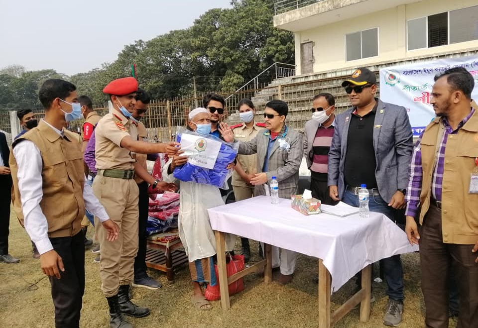

Home
About
Registration
Members
Gallary
Download
Contact
The Bangladesh Youth Cadet Forum (BYCF) is a non-profit organization dedicated to empowering and developing young people in Bangladesh. Founded in 2018, BYCF aims to provide a platform for the country's youth to come together, exchange ideas, and work towards building a brighter future for themselves and their communities.
At BYCF, we believe that young people have the power to make a real difference in the world. Our mission is to help them realize that potential by providing them with the tools, resources, and support they need to become effective leaders, responsible citizens, and active members of society.
Through our programs and initiatives, we work to promote the values of discipline, patriotism, and social responsibility among our members. We believe that these values are essential for building a strong and prosperous nation, and we are committed to instilling them in the next generation of leaders.
Our activities include leadership training, community service projects, cultural events, and sports programs, among others. We also provide opportunities for our members to participate in national and international events, which helps to broaden their horizons and expose them to new ideas and perspectives.
At BYCF, we are proud of the positive impact that our organization has had on the lives of young people in Bangladesh. We are committed to continuing our work and expanding our reach to ensure that every young person in the country has the chance to reach their full potential and make a meaningful contribution to society.
Join us today and be a part of the movement for a better tomorrow!
